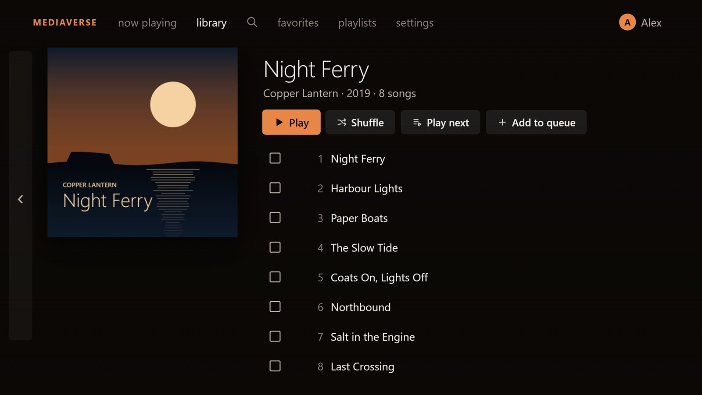

Smart TV
The living room jukebox.
A real TV app, not a phone screen stretched: your covers large, the lyrics big enough to sing along to from the couch, and everything reachable with the remote. Currently for Samsung TVs.
Samsung (Tizen) only · tried on 2025 models · not in Samsung's store yet

Browse
Built for the remote
Artists, albums, genres and songs, search with an on-screen keyboard or the number buttons, an A to Z jump, and a back bar always one press away.


Listen
Made to be left on
Lyrics
Time-stamped lyrics follow the song across the middle of the screen. Songs without them get a visualizer or a soft glow, your choice.
A wall of covers
Your albums turn slowly behind the song, in their own colors or washed with one you pick.
Kind to OLED
The layout keeps changing gently, and the TV's screen saver is held off while music plays.
Picks up again
Reopen the app and the queue is back, paused at the same place.
Who's listening?
Each person gets their own favorites, from names kept on the TV or from Jellyfin profiles with their own playlists too.
Flag a problem
Hear a skip? Flag it, and it shows up on the computer's review list.
Connect
Where the music comes from
Your computer
Switch on sharing in MediaVerse Studio; the TV finds the computer, and you pair them once with a six-digit code. The program needs to be open.
A Jellyfin server
Sign in with a Quick Connect code, no password to type with a remote. Plays whenever the server is running.
A USB drive
Plug it into the TV. Reading a large drive is slower than playing over the network.
Your phone
The Android app can share the phone's music with the TV, or send it a queue and act as the remote.
The TV streams: it does not keep copies of your music. Playlists on the TV are for playing; make and change them on the computer or the phone.
Getting it onto a TV
There is no download yet. Samsung only installs an app on TVs named in its developer's certificate, so other people will get it through Samsung's store beta. If you are comfortable with developer tools, you can build and sign it for your own TV today.
Google TV is next, built from the Android app. Until then, Google TV and Chromecast devices can receive music cast from the computer or the phone.